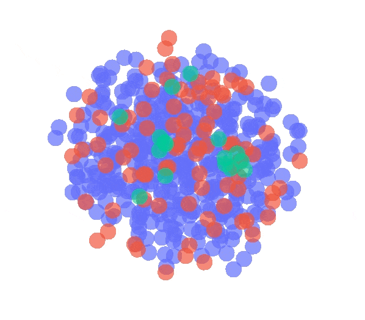
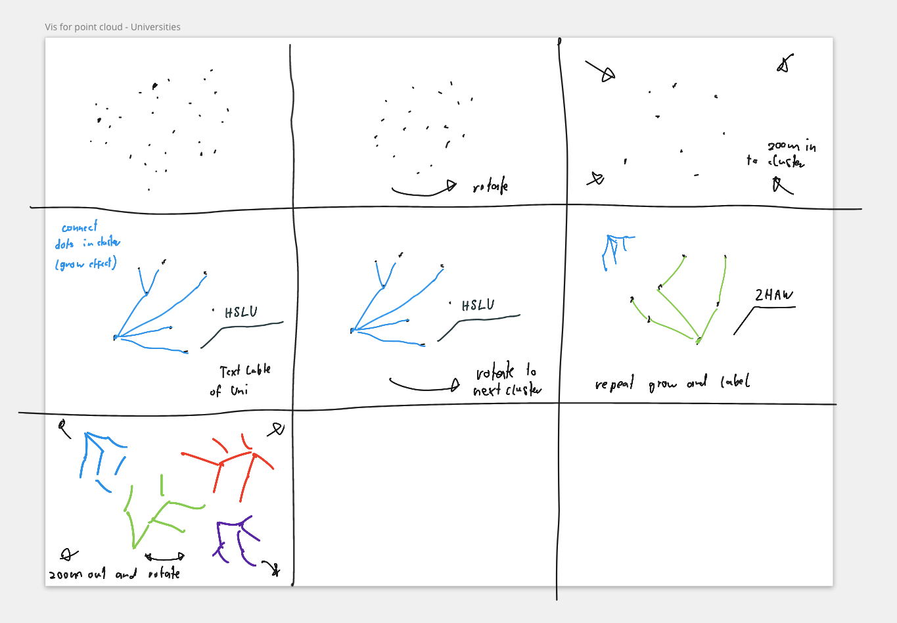
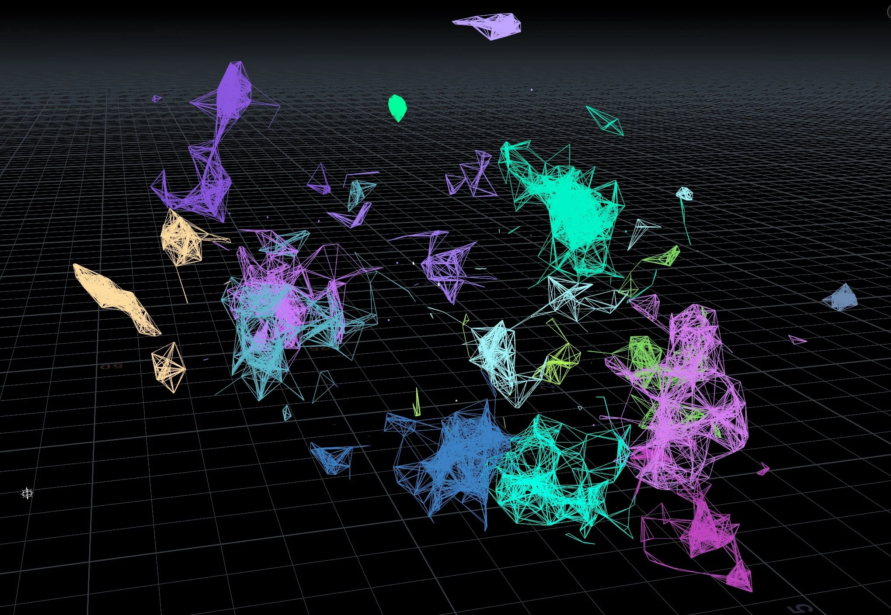
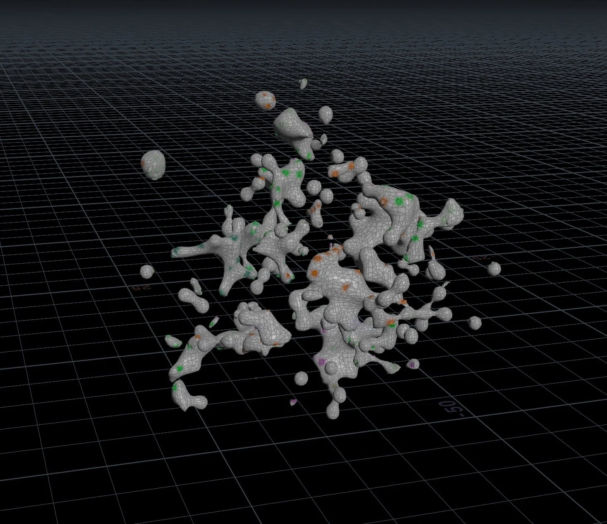
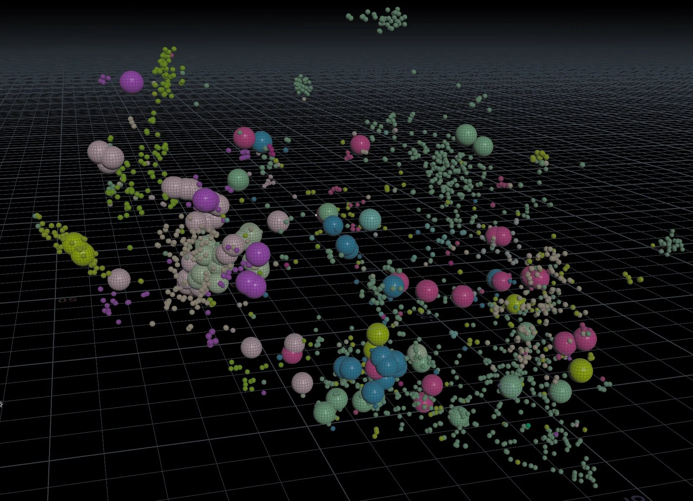
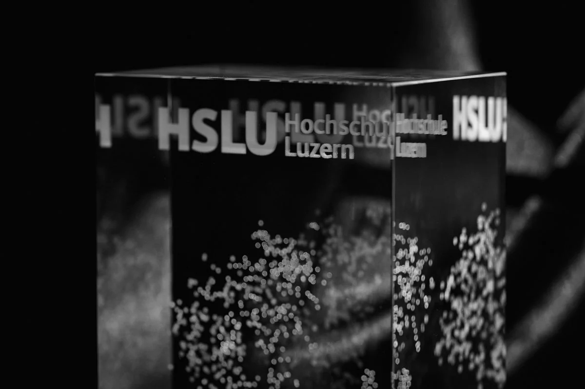
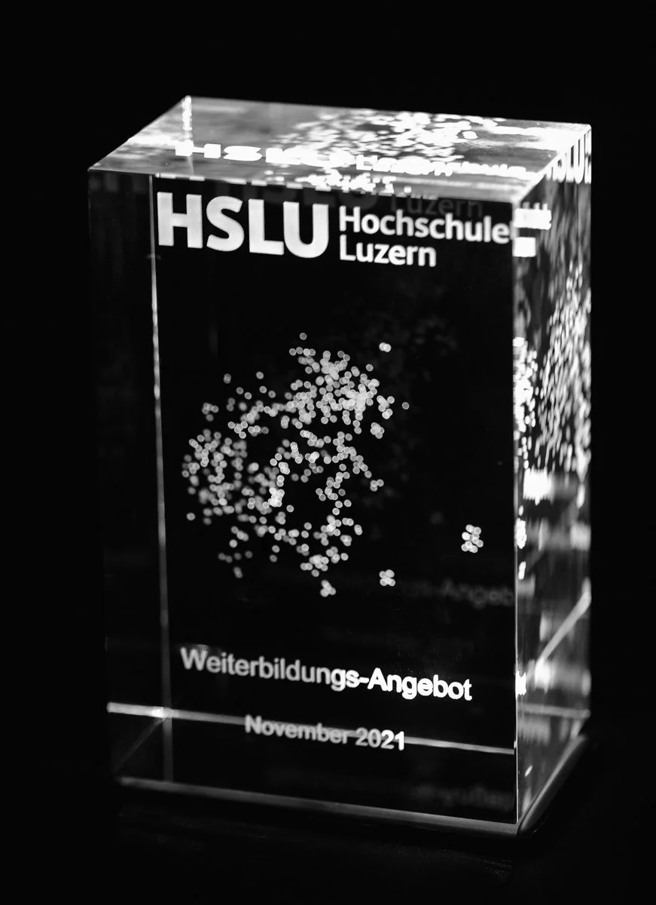

Datenvisualisierung in 3D
«Einen Blick in die Glaskugel werfen»
Wer träumt nicht davon, all seine Fragen mit eine Blick in die Glaskugel beantwortet zu bekommen? Mit dieser Idee habe ich mich ans Werk gemacht und nach Wegen gesucht das Potenzial von Daten sichtbar zu machen. Entstanden ist eine faszinierende Reise von mehrdimensionalen, digitalen Räumen bis hin Haptik in der physischen Welt.
Unstrukturierte Daten wurden mittels Machine Learning Model aufgrund ihrer Similarität (Ähnlichkeit) berechnet – wie bereits bei der Semantic Similarity Map vorgestellt. Doch anstelle von 2 Dimensionen, wurde eine dritte Dimension hinzugefügt. Jeder Datenpunkt erhielt dadurch eine X, Y und Z Koordinate.

Diese Koordinaten können in 3D abgebildet werden.

Und Punkte in dreidimensionalem Raum können mit der richtigen Technologie auf unterschiedlichste Arten modelliert werden. So haben wir uns 3 Use Cases überlegt, welche spannend sein könnten:
- Die Nische finden
- Das (Markt-)Potenzial sichtbar machen
- Keywords highlighten
Die Nische finden
Die Nische sind die Datenpunkte, welche nur wenige Verbindungslinien zu anderen Datenpunkten haben und somit keine grossen Netzwerke bilden. Es sind die kleinen, losen Datengruppen oder -punkte.
Auf dem Miro Board skizzierte Ideen

Und die Umsetzung in Houdini (SideFX)
Das (Markt-)Potenzial sichtbar machen
Das Marktpotenzial entspricht den Leerräumen. Also überall dort, wo kein Datenpunkt sichtbar ist.

Keywords highlighten
Die Keywords, welche in den Datenpunkten vorkommen, werden visuell hervorgehoben. Hier am Beispiel des Keywords «Design»

Nicht zuletzt kann man diese Schöpfungen auch aus dem Digitalen in den physischen Raum überführen.

